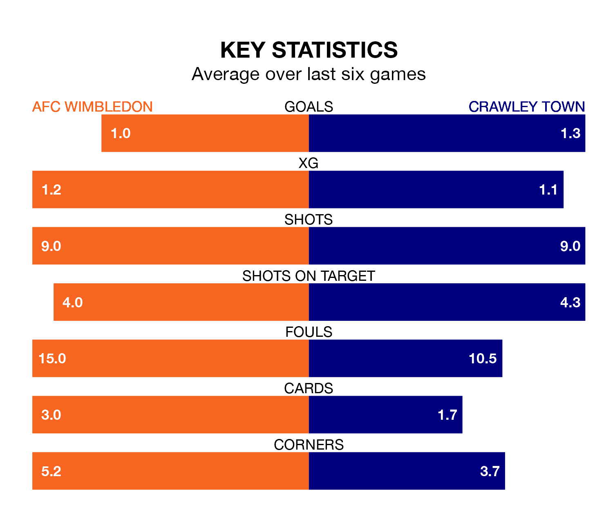

AFC Wimbledon are heavy favourites to keep all three points at home in Tuesday's late kick-off against Crawley Town.
The Dons, who sit eighth in EFL League Two with 32 games played, are priced at 1.6 to seal victory at the Cherry Red Records Stadium.
Sitting seven places and four points behind them in the table, Crawley are 4.6 to win with *Betting Company*, while the draw is at 4.0.
In Alex Bass, Wimbledon can rely on one of the league's safest pair of hands. He has kept 11 clean sheets in his 32 appearances this season, and only one other 'keeper – Mansfield Town's Christy Pym – has been able to prevent the opposition scoring on more occasions in EFL League Two.
In Crawley's net, Corey Addai has four clean sheets in 24 games. He has conceded a goal every 64 minutes, 30% more often than the 82 minutes between goals for Bass.
In the last 10 years, Wimbledon and Crawley have played each other on seven occasions. Wimbledon won five of them and Crawley two.
On average, the Dons scored 1.6 goals and the Red Devils 1.0 in those matches.
Their last meeting was on December 22, when Wimbledon won 2-1 away.
With 47 goals in 32 games so far this season, the Dons are scoring at the league's average rate with 1.5 goals per game. And they are conceding fewer than average, letting in 37 goals at a rate of 1.2 per game.
Town are also average scorers, with 1.5 goals per game. They have conceded 1.6 goals per game.
The home side are in mixed form in EFL League Two, with two wins and two draws from their last six games.
With two wins and a draw over that period, the Red Devils' form is slightly worse – they have taken seven points from 18, compared to Wimbledon's eight.
Wimbledon's last match was on Saturday, a 1-1 draw against Morecambe, with Omar Bugiel getting the goal for the Dons.
Crawley beat Forest Green Rovers 2-0 last time out, also on Saturday, with Danilo Orsi-Dadamo and Klaidi Lolos on the scoresheet.
Updated: 12:18 (UTC), 19/02/24